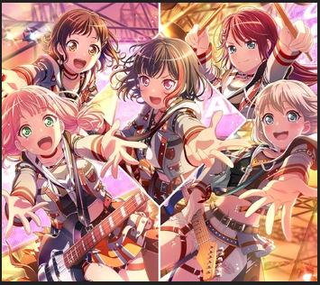

Characters, Cast and Instruments
In-fiction, Afterglow are a group of childhood friends who started a band in middle school as a way to stay close after being placed in different classes. They are scrappy and competitive, and have strong ties to their local community.
Afterglow does not perform as a live band; most members are established voice actors, but have no real-life instrumental experience. Their frontwoman has made a couple of appearances at concerts showcasing the franchise as a whole, however. Their initial singles had an interesting split between scrappy pop-punk and novelty charm songs, but recent releases have more and more bridged the gap between the two, being on the sentimental side but with some killer instrumental parts.